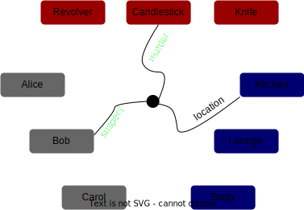
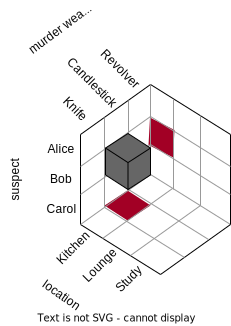

Higher-dimensional bonus exercises
(Addon to this post).
Bonus Exercise 1
What if we had a table with 3 columns? For example…
(suspect, murder_weapon, location)
This would be a way to draw a ternary relation. What other ways could we draw that relation? Consider…


- Convert these pictures to a 3-column table. Make sure to add secondary tables of Suspects, Murder Weapons, and Locations.
- Add an extra row to your table. A new suspect, a new location…
- Convert your 2-row, 3-column table to a wacky-looking triple-digraph like the one above.
- The technical name for this diagram type would be… oriented triangular hypergraph, or something. Specifically, a tripartite oriented triangular hypergraph. But that’s a mouthful.
- Try using triangles instead of those squiggly triple-edges.
- The technical name for those would be leg-labeled spiders. No, really.
- Triangles will tend to overlap, which is why I prefer the spiders.
- A related plot type is the parallel coordinates plot. You could try drawing one of these as well.
- Convert your table to a 3D Plot.
- If you don’t like 3d drawing, there’s a way to do this without drawing any cubes. It starts by drawing three 2D plots next to each other, with the same legends… but you should give each one a different title.
- This is called the “small multiples technique”, but I prefer to think of it as the “deli slicer technique.”
Bonus exercise 2
Draw a table with 4 columns. Contemplate the mess you’ve gotten yourself into.
Hint: Try using a grid of small multiples.
Links
My favorite book on diagrams, free online.
Also check out this paper from this project, one of my favorites. Looking at the diagrams might give you some more table drawing ideas.
Other visual math resources: All the Summer of Math Explanation videos on youtube are excellent. This blog is pretty great. This other blog got me to start this series. And this is a free college-level textbook about abstract nonsense diagrams.